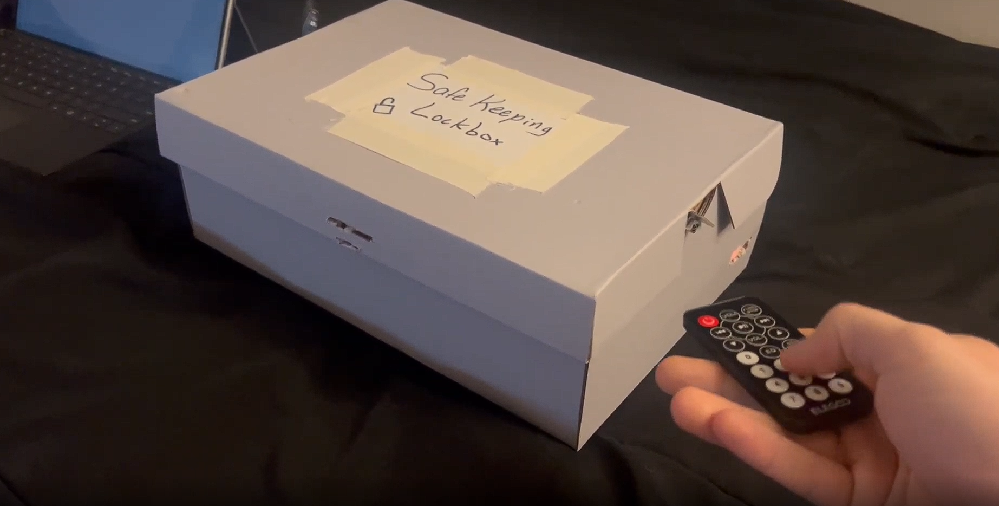
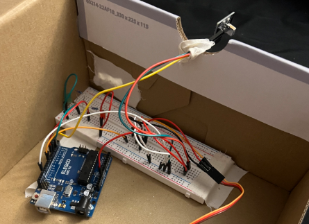
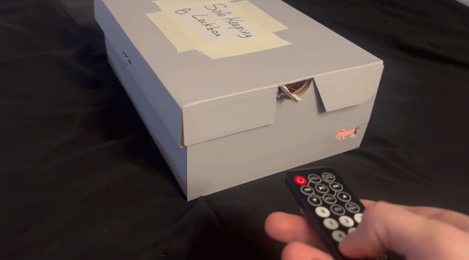
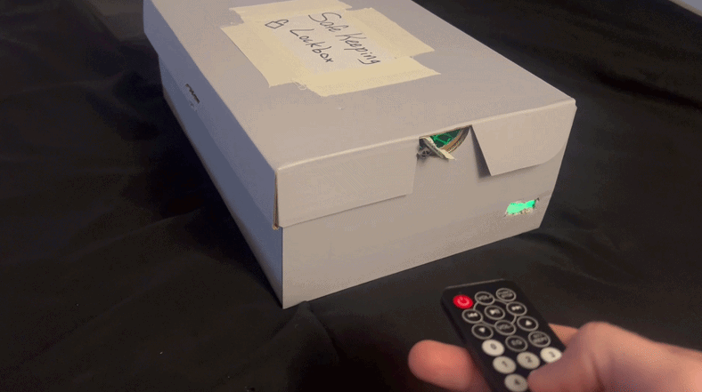
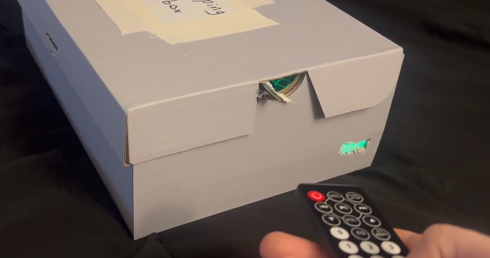

Physical Computing / Jan 27, 2025
SafeKeeping Lock Box
A functional smart lockbox prototype that uses infrared remote input, microcontroller logic, servo-based locking, and LED feedback to create a clear, reliable access-control interaction.

The problem
Standard lockboxes offer no interaction feedback — you don't know if the box is locked until you try the lid. The design goal was to build a prototype that makes lock state unambiguous: an IR remote as the key, dual LEDs as the lock indicator, and a servo providing definitive physical resistance.
Approach
The system was built around an Arduino Uno, an IR receiver, a servo motor, and a two-LED feedback circuit. A custom code sequence entered via the remote toggles the servo between locked and unlocked positions, with green and red LEDs confirming state at a glance.
Deliverables
A fully functional physical prototype with embedded firmware, documented hardware wiring, and a project breakdown published to GitHub Pages.

Arduino + breadboard + IR receiver
The core circuit lives inside the box: an Arduino Uno runs the control logic, an IR receiver decodes remote signals, and the breadboard routes power and signal to both the servo and the LED indicators.
Wiring discipline was critical — power rails, servo control, IR data, and LED lines all needed clean routing to prevent signal interference and ensure the prototype remained reliable through repeated demo cycles.
The Arduino firmware decodes incoming IR signals, validates the unlock sequence, and drives the servo to the correct angle — all with sub-100ms response time from button press to state change.

Locked — red LED

Unlocked — green LED
Two states, two colors — no ambiguity. The red LED signals the servo is engaged and the lid is physically blocked. The green LED confirms the servo has retracted and the box can be opened. Both states are visible from across the room, satisfying the core usability requirement: users should never have to guess if the box is locked.
Servo mount and LED placement
The servo arm is positioned to physically block the lid at its locked angle and clear the latch channel when unlocked. Getting this geometry right took several iteration cycles — the arm travel arc, mounting depth, and latch clearance all had to be tuned together.
The green LED is mounted at the front-face corner so it's visible from any approach angle. Both LEDs are driven by the Arduino's digital output pins with current-limiting resistors calculated for consistent brightness at 5V.

What worked
The two-state LED feedback model proved immediately intuitive in user testing — no one needed to be told what red or green meant. The IR remote gave the interaction a satisfying "key" metaphor that made the product feel more like a real appliance than a school project.
What I'd change
The servo mounting relies on friction-fit alignment that can drift after repeated use. A cleaner v2 would use a printed bracket to fix the servo position, and add an EEPROM-backed sequence so the code persists across power cycles.